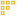

Cambium Wiki
Mycelial Network
The Mycelial Network is Cambium's scalable item storage and access system. It mimics the fungal networks found in nature, allowing you to link disparate chests and machines into a single, unified inventory.
Components
Mycelial Node
The Mycelial Node is the "terminal" or core of the network.
- Right-clicking the Node opens a GUI that displays all items within every inventory connected to its network.
- From this GUI, you can insert and extract items as if they were in a single massive chest.
- The Node automatically routes inserted items into available slots in connected inventories.
Mycelial Strand

The Mycelial Strand is the connective tissue of the network.
- Strands are placed to bridge the gap between your storage blocks (like chests, barrels, or machines) and the Mycelial Node.
- They form visual connections to each other and surrounding inventories.
Setup
- Place a Mycelial Node where you want to access your items.
- Run Mycelial Strands from the Node to any inventories you want to include in the network.
- Once the Strands are connected to an inventory, that inventory becomes part of the Node's consolidated interface!
Last updated: March 17, 2026